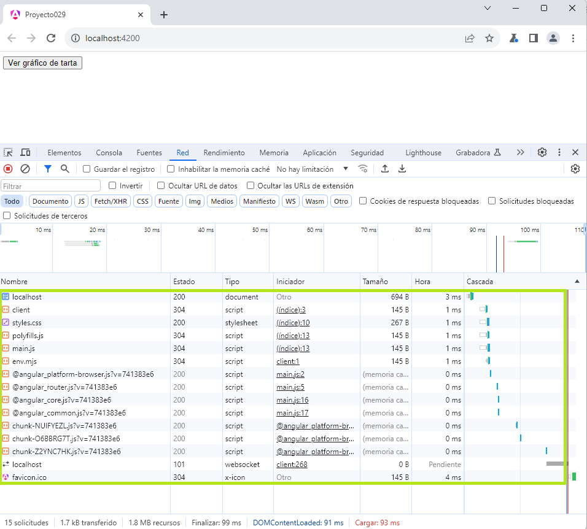
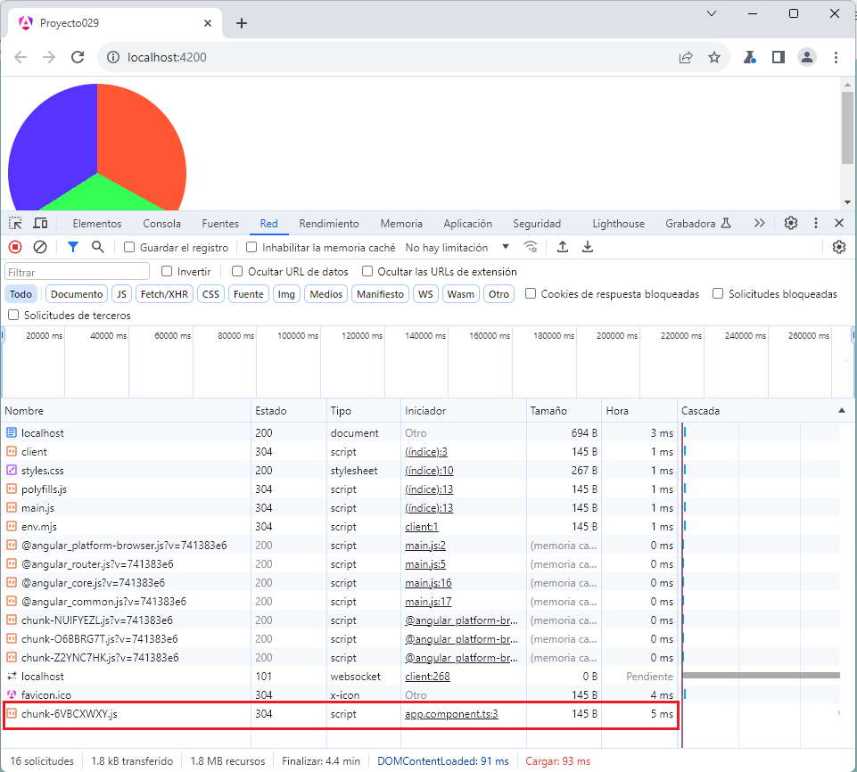

Las vistas diferidas nos permite en algunas situaciones el concepto de Lazy Loading al permitir organizar una aplicación Angular que no cargue en forma completa toda la aplicación web en una única llamada al servidor, sino que retrase la carga hasta el momento de su utilización.
El proceso de particionar la aplicación en distintos archivos JavaScript lo hace automáticamente Angular cuando construimos la aplicación.
Veamos un problema y verifiquemos en el navegador que cuando disponemos una o más componentes en un bloque @defer, el mismo se almacena en un archivo JavaScript separado y es peticionado al servidor en el momento que sea necesario.
Crear una componente que llamada 'graficotarta' que muestre un gráfico de tarta genérico. Luego en la componente principal de nuestra aplicación proceder a mostrar el gráfico cuando hagamos click sobre un botón.
Creemos el proyecto:
ng new proyecto029
Primero creamos la componente:
ng generate component graficotarta
No hacemos ningún cambio al archivo 'graficotarta.component.ts':
import { Component } from '@angular/core';
@Component({
selector: 'app-graficotarta',
imports: [],
templateUrl: './graficotarta.component.html',
styleUrl: './graficotarta.component.css'
})
export class GraficotartaComponent {
}
En la plantilla 'graficotarta.component.html' disponemos un div:
<div class="tarta"></div>
En la hoja de estilo 'graficotarta.component.css' disponemos:
.tarta {
width: 200px;
height: 200px;
background: conic-gradient(
#ff5733 0% 33%, /* Color para la primera porción */
#33ff57 33% 66%, /* Color para la segunda porción */
#5733ff 66% 100% /* Color para la tercera porción */
);
border-radius: 50%;
}
Pasemos ahora a modificar la componente creada por defecto 'app.component.ts' importando la otra componente:
import { Component } from '@angular/core';
import { RouterOutlet } from '@angular/router';
import { GraficotartaComponent } from './graficotarta/graficotarta.component';
@Component({
selector: 'app-root',
imports: [RouterOutlet, GraficotartaComponent],
templateUrl: './app.component.html',
styleUrls: ['./app.component.css']
})
export class AppComponent {
title = 'proyecto029';
}
y la plantilla 'app.component.html' donde cargaremos mediante una vista diferida el gráfico de tarta:
@defer (on interaction) {
<app-graficotarta></app-graficotarta>
} @placeholder {
<button>Ver gráfico de tarta</button>
}
<router-outlet />
Lo más interesante es ver que sucede en las peticiones de archivos desde el navegador. Debemos abrir la ventana de herramientas del navegador y en la pestaña 'Red' podemos observar los archivos solicitados al servidor hasta ese momento:
Luego presionamos el botón y podemos observar que se solicita otro archivo al servidor con el código que genera el gráfico de tarta:
Podemos probar esta aplicación en la web aquí.
En una aplicación grande podemos dividir distintas funcionalidades y realizar su carga con lazy loading.
Vimos en el ejemplo anterior que con la carga perezosa podemos reducir la sobrecarga del servidor, por ejemplo si el usuario no presiona el botón no será necesario solicitar al servidor la componente.
Hay situaciones donde tal vez lo más importante es la velocidad de ejecución de nuestra aplicación y no queremos que el usuario cuando presione el botón tenga que esperar la recuperación de datos del servidor, para esto disponemos un comando llamado 'prefetch':
@defer (on interaction; prefetch on idle) {
<app-graficotarta></app-graficotarta>
} @placeholder {
<button>Ver gráfico de tarta</button>
}
Agregando 'prefetch on idle', con esto indicamos que el bloque se recupere del servidor sin la necesidad que se dispare el 'on interaction'.